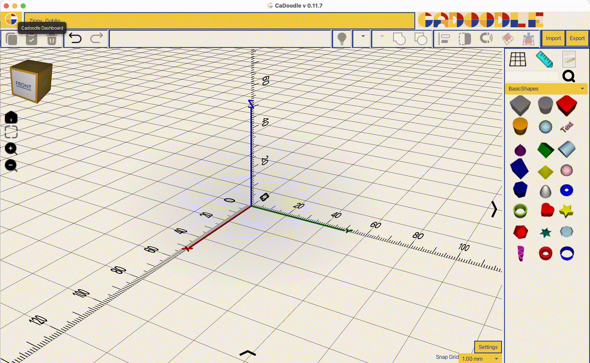
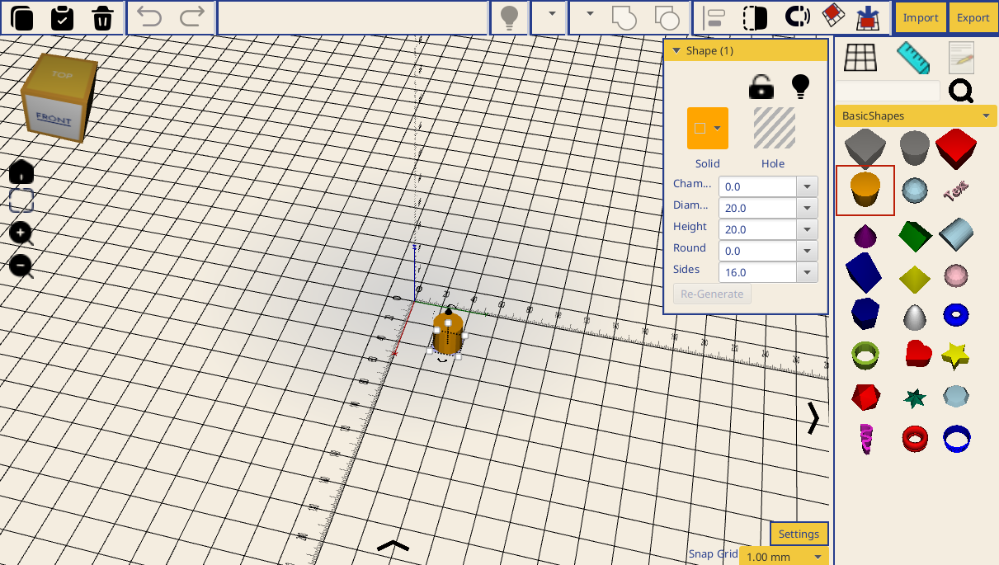

Getting Started
Overview
CaDoodle works with .doodle files. These files are stored on your local machine. They are created and accessed from the CaDoodle Dashboard.

Creating your first shape
Each new .doodle file launches as a clear workspace with a shape panel on the right side. To add a shape to your workspace, click on the shape in the panel.
Clicking on the shape will place the shape on the workspace and select the shape. A shape customization menu appears when shapes are selected.
The shape customization menu allows you to make changes to basic shapes like adding chamfers, adjusting the number of sides, and more.
